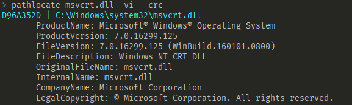
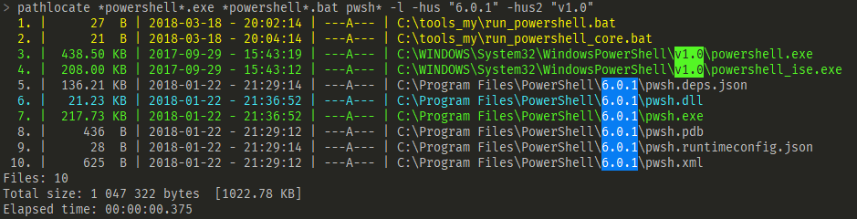
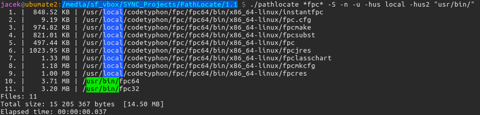

-
Show all files from directories listed in the %PATH% environment variable:
- Windows: pathlocate *
- Linux: pathlocate "*"
-
Show the first 10 EXE and/or DLL files from directories listed in the %PATH% environment variable:
pathlocate *.exe *.dll -l 10
-
Display VersionInfo block from the msvcrt.dll file and calculate its CRC32 cheksum:
pathlocate msvcrt.dll -vi --crc
Result:

-
Show executables (EXE) and batch scripts (BAT) that contain powershell in the name, and files that start with pwsh string. Use long format (-l). Highlight string 6.0.1 and v1.0.
pathlocate *powershell*.exe *powershell*.bat pwsh* -l -hus "6.0.1" -hus2 "v1.0"
Result:

-
Show all files that contain the fpc string in the name.
Show file size in human readable format (-S), show numbers(-n), show summary (-u).
Highlight string local and usr/bin/.
pathlocate *fpc* -S -n -u -hus local -hus2 "usr/bin/"
Result:

-
Checking in the batch file whether the 7z archiver can be run:
@echo off
pathlocate 7z.exe > nul
if %errorlevel% EQU 0 goto LBL_ALL_OK
if %errorlevel% EQU 1 goto LBL_ERROR
if %errorlevel% EQU 2 goto LBL_NO_FILES
:LBL_ALL_OK
echo All OK! The 7z.exe file exists. We can start archiving.
rem ... do something ...
goto LBL_END
:LBL_ERROR
echo Wrong syntax or another error!
goto LBL_END
:LBL_NO_FILES
echo No 7z archiver found. Compression can not be started.
goto LBL_END
:LBL_END
echo --------- END -----------